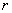
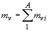

|
В. И. ЕЛИСЕЕВ ВВЕДЕНИЕ В МЕТОДЫ ТЕОРИИ
ФУНКЦИЙ ПРОСТРАНСТВЕННОГО КОМПЛЕКСНОГО ПЕРЕМЕННОГО |
|
Продолжение 2:
6.1. Модели атомных ядер. Обоснование циклонной модели атомного ядра
На примере ядерной физики наиболее отчетливо проявляется та ошибка, которая допущена в теории относительности, когда преобразования Лоренца фактически производят в Декартовых координатах. Теория вычетов комплексного пространства указывает на то, что потенциал ядерного поля, который в мезонных теориях фактически остался электромагнитным, должен иметь более высокие порядки отрицательной степени , чтобы характеризовать пространство более высокой размерности. Рост размерности пространства сопровождается структурными изменениями последнего вплоть до начала координат. Система А нуклонов и испускаемые для квантового обмена мезоны создают пространство более высокой размерности.
Логика структуры комплексного пространства предлагает воспользоваться теорией квантового обмена, принять для расчета интегральный обменный квант , где есть сумма всех возможных, участвующих в обмене мезонов для конкретной системе нуклонов А. В этом случае масса ядра запишется в виде . Модуль этого комплекса будет отвечать массе ядра. Эти формулы дают энергию связи атомных ядер
. Модуль этого комплекса будет отвечать массе ядра. Эти формулы дают энергию связи атомных ядер
Интегральный обменный квант становится параметром исследования. В соответствии с геометрией комплексной алгебры обменный квант идет по изолированной оси. Изолированная ось характеризуется сечением и интенсивностью прохождения обменного кванта. Параметр
Формула энергии связи атомных ядер выражается произведением энергии связи одного
-туннеля на количество туннелей, где . Формула выведена из тривиальных экспериментальных данных. Масса обменного кванта соответствовала массе пиона , радиус ядра . Формула рассматривается как первое приближение. Более точная формула записывается в виде . По этим формулам оценим качественную и количественную характеристику энергетических туннелей. Энергия связи выступает как энергетическая характеристика пространства как отражение структуры пространства. При достижении максимального значения для А нуклонов в пространстве открывается и начинает формироваться новый  туннель. Взаимодействующие частицы создают структуру более высокой размерности,
туннель. Взаимодействующие частицы создают структуру более высокой размерности,  туннели которой характеризуются сокращением сечения и большей интенсивностью по обменному кванту. В связи с этим пространство одного измерения находится под давлением пространства другого измерения, которое осуществляется через изменение площади изолированных туннелей. Происходит, если воспользоваться принятой в теоретической физике терминологией, зашнуровка пространства. Но эта зашнуровка в такой трактовке более наглядна и понятна.
туннели которой характеризуются сокращением сечения и большей интенсивностью по обменному кванту. В связи с этим пространство одного измерения находится под давлением пространства другого измерения, которое осуществляется через изменение площади изолированных туннелей. Происходит, если воспользоваться принятой в теоретической физике терминологией, зашнуровка пространства. Но эта зашнуровка в такой трактовке более наглядна и понятна.
В принципе, если две частицы притягиваются друг к другу, то это вызвано стремлением создать структуру с большей интенсивностью изолированных  туннелей. В этом смысле роль обменного кванта заключается в связи пространств разной размерности.
туннелей. В этом смысле роль обменного кванта заключается в связи пространств разной размерности.
Теория потенциала отражает самую существенную сторону ядерного взаимодейстия –его короткодействие. В потенциале Юкава это достигается экспоненциальным множителем, в показателе которого стоит масса обменного кванта. Так, что с увеличением массы обменного кванта радиус взаимодействия уменьшается. Интегральный обменный квант сокращает сечение изолированных направлений, через которые происходят взаимодействия. Этот вывод следует рассматривать как уточнение количественное и качественное свойство короткодействия. Кроме того, теория потенциала нащупала в грубом приближении существование изолированных направлений в поле ядерных сил. Достаточно рассмотреть для этого утверждения потенциалы с непроникающей отталкивающей серединой, асимметричные потенциалы. Эти потенциалы с очевидностью говорят о изменении структуры пространства при переходе к размерам модуля пространства . Сокращение радиуса действия сил вызывает появление в пространстве вычетов в виде  туннелей, через которые и происходит взаимодействие путем обмена мезонными квантами, Эти вычеты создают остов для формирования циклонных вихрей из обменных квантов, в пространстве которых движутся нуклоны. Насыщение этих туннелей вызывает образование новых, которые в свю очередь начинают формироваться в блоки, вызывая асимметрию пространства.
туннелей, через которые и происходит взаимодействие путем обмена мезонными квантами, Эти вычеты создают остов для формирования циклонных вихрей из обменных квантов, в пространстве которых движутся нуклоны. Насыщение этих туннелей вызывает образование новых, которые в свю очередь начинают формироваться в блоки, вызывая асимметрию пространства.
Далее необходимо отметить, что остов вычетов нельзя сжать. Это свойство определяет плотность массы ядерного вещества постоянной для различных ядер:объем ядра пропорционален числу А нуклонов в нем. Это говорит о несжимаемости ядерного вещества и делает похожим его на жидкую каплю. Все это дало возможность построить капельную модель ядра. Капельная модель была развита в трудах Н. Бора, Дж. Уиллера и Я. И. Френкеля.
На основе капельной модели Вейцзеккер предложил полуэмпирическую формулу для энергии связи и массы ядер.
[10].
, где коэффициенты определены экспериментально и делаются попытки их теоретического обоснования. Они равны. Все коэффициенты в МеВ. для четно –четных ядер, для нечетных ядер, для нечетно-нечетных ядер. МеВ.
Капельная модель позволила рассчитать силовой параметр и на его основе исследовать свойства стабильных ядер, их устойчивости и вычислить такие важные параметры как энергию связи протона в ядре-, нейтрона-,  -a частицы.
-a частицы.
,
,
Формулы позволили определить область нуклоностабильных ядер. Основным недостатком капельной модели следует считать ее неспособность описать возбужденные состояния ядер. Попытка согласовать частоту поверхностных колебаний жидкой капли из ядерной материи с положениями уровней ядра не привели к успеху. Асимметрия деления остается камнем предкновения всех существующих моделей. Именно эти экспериментальные факты требуют от теоретиков разработки новых моделей ядра.
В основу оболочечной модели положены следующие предположения: сферическая симметрия потенциала, отсутствие взаимодействий между нуклонами, справедливость принципа Паули для нуклонов. Эти предположения и определили область эффективности модели, Это легкие сферические ядра в слабо возбужденном состоянии.
Ядра представляют систему из большого числа взаимодействующих нуклонов. В связи с этим ядерные силы необычайно сложны и для их исследования требуется введение обобщенных условий для упрощения. Такими обобщенными условиями выступают различные модели ядер. Циклонная модель в качестве обобщения вводит структуру пространства, выраженную через
-туннели. Пространство ядерных сил сжато в размеры по модулюПредпосылками к разработке оболочечной модели ядра явилась специфическая роль магических чисел нуклонов(2, 8, 20, 28, 50, 82, 126). Опыт показывает, что ядра с таким количеством протонов или нейтронов особенно устойчивы. Подобно магическим числам атомная структура имеет свои числа (2, 10, 18, 28, 36, 54, 86), характеризующие определенное число электронов, атомы которых также наиболее устойчивы ( в основном это нейтральные газы). Ранее было показано, что эти числа отвечают определенному числу
Магическое число 20 имеют следующие изотопы
. В этом ряду наиболее устойчивым являетсяМагическое число 50 имеют следующие изотопы
. В этом ряду сразу три ядра имеют стабильность. . Эти ядра имеют 2Изотопы никеля
также содержат магическое число 28, имеют три туннеля в ядре и сформированные три электронных оболочки, закрывают третийряд периодической таблицы элементов.
Магическое число 82 имеет следующий ряд изотопов.
. В этом ряду устойчивыми являются два ядра . Этот ряд ядер имеет 4-ре -туннеля.Криптон имеет четыре заполненные электронные оболочки.
Далее следует ряд ядер с магическим числом 126. Это
. Ядра и электронные оболочки атомов имеют для этих изотопов 6 –ть -туннелей. ЭлементПроведенный анализ магических чисел находится в строгом соответствии со структурными исследованиями проведенными в главе.
Мини оглавление:
[0], [1.1.1, 1.1.2, 1.1.3, 1.1.4, 1.1.5, 1.1.6, 1.1.7, 1.1.8, 1.2, 1.2.1, 1.2.2, 1.2.2.a, 1.2.2.b, 1.2.2.c, 1.2.2.d, 1.2.2.e, 1.2.2.f, 1.2.2.g, 1.2.2.h, 1.2.3, 1.3.1, 1.3.2, 1.3.3, 1.3.4, 1.3.5, 1.3.6, 1.4.1, 1.4.2, 1.5, 1.6, 1.7.1, 1.7.2, 1.7.3.1, 1.7.3.2, 1.7.3.3, 1.7.4.1, 1.7.4.2, 1.8.1], [2.1, 2.2],[3.1, 3.2, 3.3, 3.4.1, 3.4.2, 3.4.3, 3.4.4, 3.4.5],[4.1, 4.2, 4.3, 4.4],[5.1, 5.1.Рис.52, 5.2, 5.3, 5.4, 5.4.Т1, 5.4.Т2, 5.4.Т3, 5.5.1, 5.5.2, 5.5.3, 5.5.4],[6.1.1, 6.1.2, 6.2.1, 6.2.2, 6.2.3, 6.2.4, 6.2.5, 6.3, 6.4.1, 6.4.2, 6.5.1, 6.5.2],[7.1, 7.2, 7.3, 7.4, 7.5, 7.6, 7.7.1, 7.7.2, 7.8.1, 7.8.2, 7.8.3, 7.9],[8.1, 8.2.1, 8.2.2, 8.3, 8.4, 8.5, 8.6, 8.6.T1, 8.7, 8.8.1, 8.8.2, 8.8.3, 8.9.1, 8.9.2, 8.9.3, 8.10, 8.10.T2, 8.10.T3],[9.1, 9.2, 9.3, Рис.88, 89, 90, 91, 92, 93, 94, 95, 96, 97, 98, 99, 100],[10.1, 10.2, 10.3, 10.4, 10.5, 10.6, 10.7, 10.8, 10.9, 10.10, 10.11, 10.12, 10.13, 10.14, 10.15.1, 10.15.2, 10.16.1, 10.16.2, 10.17, 10.18],[11]
Размещенный материал является электронной версией книги: © В.И.Елисеев, "Введение в методы теории функций пространственного комплексного переменного", изданной Центром научно-технического творчества молодежи Алгоритм. - М.:, НИАТ. - 1990. Шифр Д7-90/83308. в каталоге Государственной публичной научно-технической библиотеки. Сайт действует с 10 августа 1998.
E-mail: mathsru@gmail.com